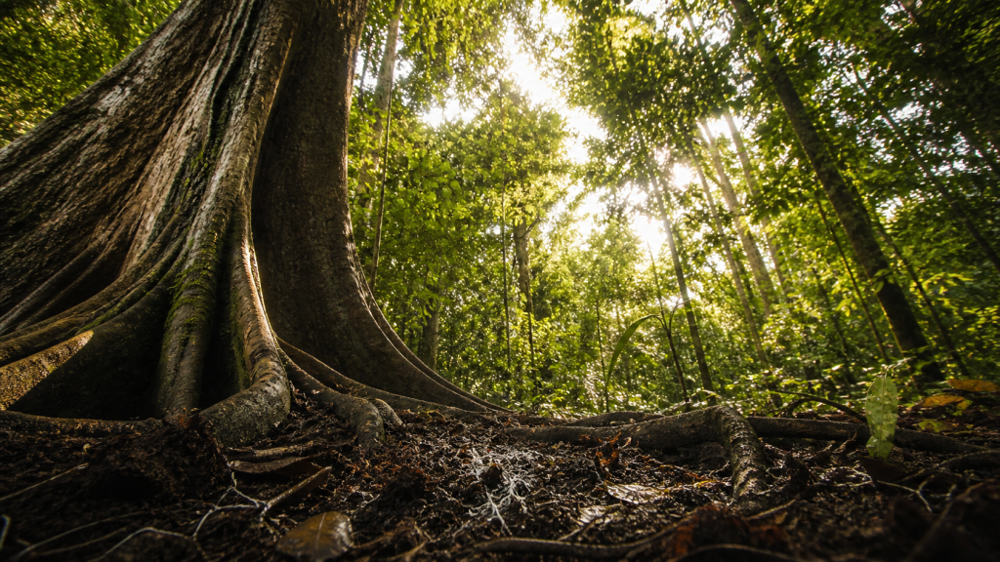

We have spent centuries walking through forests thinking they were still. They were not. They were talking. About us, among other things.

If you have ever stood in a forest and felt, inexplicably, like something was aware of your presence, science suggests you may not have been entirely wrong. Trees do not perceive the way animals do, but they respond. They respond to vibrations in the soil, to shifts in airborne carbon dioxide, to chemical signals drifting through the air around them. And those responses travel, through fungal threads and root networks, outward through the forest floor in ways that researchers are still working to fully understand.
We have long treated forests as scenery. But a forest is not a collection of individual trees any more than a city is a collection of individual buildings. It is a community, networked and cooperative. And the deeper scientists look, the more remarkable the architecture beneath it becomes.
The Internet Under Your Feet
That architecture begins underground. Beneath every healthy forest floor lies a communication and exchange network built not from fiber optic cable but from mycorrhizal fungi. These microscopic threads interweave through the soil and connect the root systems of trees across an entire forest into a single shared system. Researchers have taken to calling it the “Wood Wide Web”.
Through this fungal network, trees exchange water, carbon, nitrogen, and chemical signals in a continuous flow. A tree with surplus sugar produced through photosynthesis can transfer it through the network to a shaded neighbour producing too little of its own. These transfers have been measured, tagged with isotopes, and traced in controlled scientific studies. The carbon that left one tree’s roots has been detected inside the tissues of a tree several metres away, carried through the fungal threads connecting them.
Reality Check
A single teaspoon of healthy forest soil contains several kilometres of fungal threads. Deep tilling and broad-spectrum fungicides do not just disturb dirt. They sever the network that makes all of the above possible. Cutting the cables, one season at a time.
The Mother Tree
Within this network, the oldest and largest trees function as hubs. Scientists have begun calling them Mother Trees. A Mother Tree is connected to hundreds of others and distributes carbon preferentially, sending more resources toward her own seedlings, which root studies suggest she may distinguish through shared chemical markers in the soil. When a Mother Tree is dying, research indicates she releases a final large pulse of carbon and defense compounds into the network, a transfer to the community before she goes.
Industrial logging operations typically target these trees first because they yield the most timber. What that calculation miss is that removing them collapses the hub of a network that every surrounding tree depends on. The remaining forest does not simply continue without them. It continues diminished.
The Warning System
The network carries more than nutrients. When a tree comes under insect attack, it releases specific volatile chemical compounds into the air. Neighbouring trees detect those compounds and begin producing their own defense chemicals before the threat reaches them. Not in reaction to being attacked. In anticipation of it, based on a signal received from a neighbour.
The same alert travels below ground through the fungal network as chemical pulses. The forest responds collectively, not individually. This is a core reason why diverse, intact forests resist pest outbreaks far better than monoculture plantations. A plantation of a single species shares a single vulnerability. When the signal goes out, every tree faces the same threat at once, and none of them have a neighbour with a different defence to offer.
What the Silence Is Actually Saying
Forest communication is still young; and researchers continue to debate how far these signals travel, how reliably trees respond, and what the limits of the network actually are. But the core finding is no longer in serious dispute: forests are not passive. They are active, exchanging systems, and the ground beneath them is doing as much work as the canopy above.
That changes what it means to lose one. Not just the timber. Not just the shade. The node in a network, the hub of an exchange, the sender of a warning that the trees around it will no longer receive.
We’re sure you want to walk into a forest differently from now on. The stillness you feel is not stillness. It is a conversation at a frequency we are only just learning to detect.